kingsts <- ts(kings)
kingstsTime Series:
Start = 1
End = 42
Frequency = 1
[1] 60 43 67 50 56 42 50 65 68 43 65 34 47 34 49 41 13 35 53 56 16 43 69 59 48
[26] 59 86 55 68 51 33 49 67 77 81 67 71 81 68 70 77 56Construct a regular time series, distinguish trend from seasonality, calculate moving averages, fit an introductory ARIMA model, and evaluate forecasts using a chronological holdout and a baseline.
The detailed examples from the original time-series chapter are retained: English kings, monthly births, souvenir sales, and London rainfall. They teach time-series structure before the agricultural weather application. Local copies are supplied so a classroom render does not depend on a live download. These are historical series, not simulated agricultural observations. The data appendix records the original sources and units.
We will be using the following data to demonstrate Time series analysis in R. Download the data and save in your system for practice.
-kings.csv contains data on the age of death of successive kings of England, starting with William the Conqueror.
-births.csv is a data set of monthly births in New York City, in thousands, from January 1946 to December 1959 (originally collected by Newton).
-souvenir.csv contains monthly sales for a souvenir shop at a beach resort town in Queensland, Australia, for January 1987-December 1993.
-rain.csv data contains total annual rainfall in inches for London, from 1813-1912.
After importing the time series data kings.csv into R in the name kings, the next step is to save it as a time series object using R’s ts() function. For example, to store the data from your imported CSV file in the variable ‘kings’ as a time series, you would write:
Import kings.csv and call it as kings in R. (We assume the reader knows the basics of importing csv in R)
kingsts <- ts(kings)
kingstsTime Series:
Start = 1
End = 42
Frequency = 1
[1] 60 43 67 50 56 42 50 65 68 43 65 34 47 34 49 41 13 35 53 56 16 43 69 59 48
[26] 59 86 55 68 51 33 49 67 77 81 67 71 81 68 70 77 56If your time series data is collected at intervals shorter than a year, like monthly or quarterly, you can use the frequency parameter in the ts() function. For monthly data, set frequency=12, and for quarterly data, set frequency=4. You can also indicate the starting year and interval with the start parameter. For instance, if the data begins in the second quarter of 1986, you’d use start=c(1986, 2).
Use the bundled data/original-births.csv file described in the first section which contains number of births per month in New York city, from January 1946 to December 1959. So it can be converted to ts object in R as follows. It is a monthly data so frequency 12.
birthsts<- ts(births, frequency=12, start=c(1946,1))
birthsts Jan Feb Mar Apr May Jun Jul Aug Sep Oct
1946 26.663 23.598 26.931 24.740 25.806 24.364 24.477 23.901 23.175 23.227
1947 21.439 21.089 23.709 21.669 21.752 20.761 23.479 23.824 23.105 23.110
1948 21.937 20.035 23.590 21.672 22.222 22.123 23.950 23.504 22.238 23.142
1949 21.548 20.000 22.424 20.615 21.761 22.874 24.104 23.748 23.262 22.907
1950 22.604 20.894 24.677 23.673 25.320 23.583 24.671 24.454 24.122 24.252
1951 23.287 23.049 25.076 24.037 24.430 24.667 26.451 25.618 25.014 25.110
1952 23.798 22.270 24.775 22.646 23.988 24.737 26.276 25.816 25.210 25.199
1953 24.364 22.644 25.565 24.062 25.431 24.635 27.009 26.606 26.268 26.462
1954 24.657 23.304 26.982 26.199 27.210 26.122 26.706 26.878 26.152 26.379
1955 24.990 24.239 26.721 23.475 24.767 26.219 28.361 28.599 27.914 27.784
1956 26.217 24.218 27.914 26.975 28.527 27.139 28.982 28.169 28.056 29.136
1957 26.589 24.848 27.543 26.896 28.878 27.390 28.065 28.141 29.048 28.484
1958 27.132 24.924 28.963 26.589 27.931 28.009 29.229 28.759 28.405 27.945
1959 26.076 25.286 27.660 25.951 26.398 25.565 28.865 30.000 29.261 29.012
Nov Dec
1946 21.672 21.870
1947 21.759 22.073
1948 21.059 21.573
1949 21.519 22.025
1950 22.084 22.991
1951 22.964 23.981
1952 23.162 24.707
1953 25.246 25.180
1954 24.712 25.688
1955 25.693 26.881
1956 26.291 26.987
1957 26.634 27.735
1958 25.912 26.619
1959 26.992 27.897similarly for souvenir.csv
souvenirts <- ts(souvenir, frequency=12, start=c(1987,1))
souvenirts Jan Feb Mar Apr May Jun Jul
1987 1664.81 2397.53 2840.71 3547.29 3752.96 3714.74 4349.61
1988 2499.81 5198.24 7225.14 4806.03 5900.88 4951.34 6179.12
1989 4717.02 5702.63 9957.58 5304.78 6492.43 6630.80 7349.62
1990 5921.10 5814.58 12421.25 6369.77 7609.12 7224.75 8121.22
1991 4826.64 6470.23 9638.77 8821.17 8722.37 10209.48 11276.55
1992 7615.03 9849.69 14558.40 11587.33 9332.56 13082.09 16732.78
1993 10243.24 11266.88 21826.84 17357.33 15997.79 18601.53 26155.15
Aug Sep Oct Nov Dec
1987 3566.34 5021.82 6423.48 7600.60 19756.21
1988 4752.15 5496.43 5835.10 12600.08 28541.72
1989 8176.62 8573.17 9690.50 15151.84 34061.01
1990 7979.25 8093.06 8476.70 17914.66 30114.41
1991 12552.22 11637.39 13606.89 21822.11 45060.69
1992 19888.61 23933.38 25391.35 36024.80 80721.71
1993 28586.52 30505.41 30821.33 46634.38 104660.67After importing a time series into R, the next step is often to create a plot of the data. You can do this using the plot.ts() function. For example, to plot the time series of the ages at death of 42 successive English kings, you would write:
plot.ts(kingsts)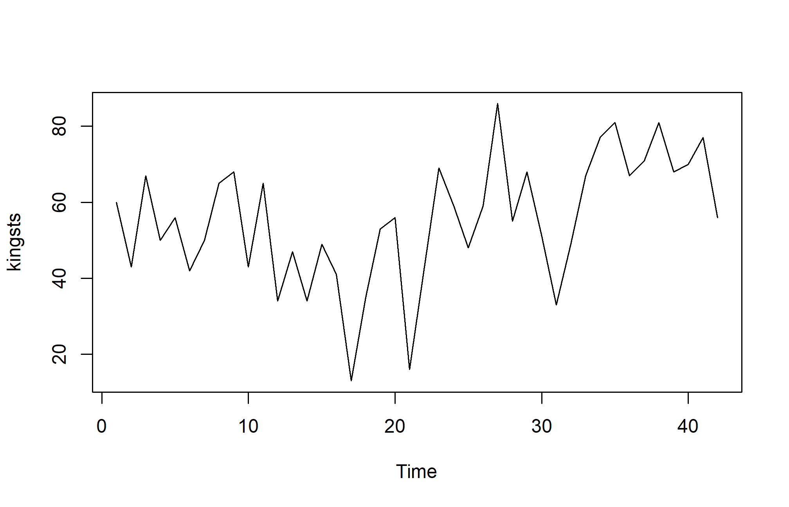
In the time plot, the fluctuations in the data appear to be relatively consistent in size throughout the series. This suggests that an additive model could be appropriate for describing this time series. In an additive model, the components (trend, seasonality, and residuals) are added together, which works well when the variability (the size of fluctuations) does not change much over time.
plot.ts(birthsts)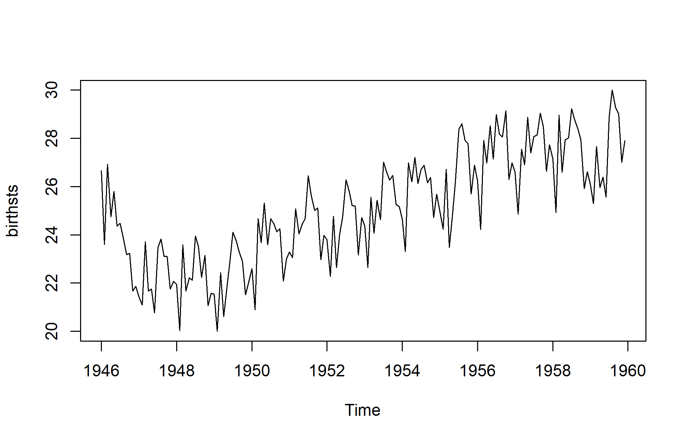
The time series shows a pattern of seasonal variation in monthly births, with peaks in the summer and dips in the winter. This suggests that an additive model could be suitable, as the size of the seasonal fluctuations remains fairly constant and does not seem influenced by the overall level of the series. Additionally, the random variations in the data appear to stay relatively stable over time.
plot.ts(souvenirts)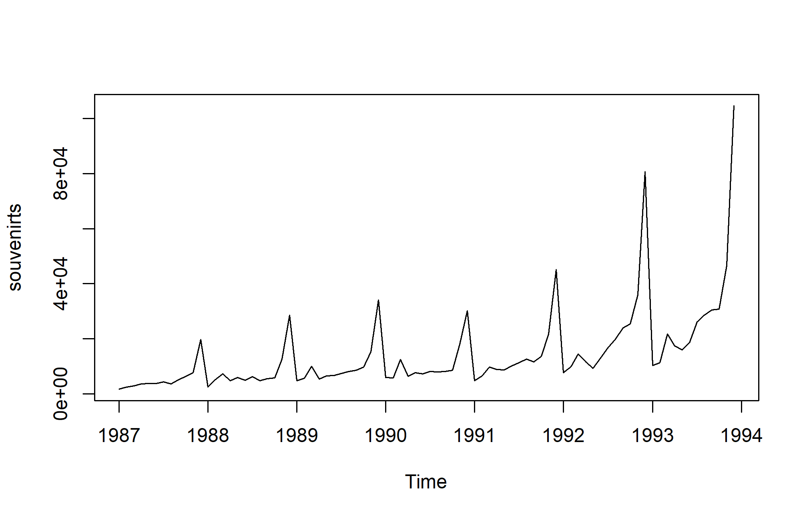
In this case, an additive model doesn’t seem suitable because both the seasonal and random fluctuations increase as the time series level rises. To make the data more suitable for an additive model, we may need to apply a transformation. One common approach is to take the natural logarithm of the original data, which can help stabilize the variance and make the fluctuations more consistent across the series.
logsouvenirts <- log(souvenirts)
plot.ts(logsouvenirts)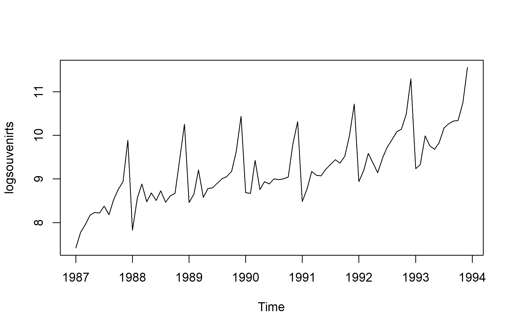
In the log-transformed time series, the size of both the seasonal and random fluctuations appears relatively stable over time and does not seem to vary with the overall level of the series. This suggests that the log-transformed data is now more suitable for an additive model, as the fluctuations are more uniform throughout the time series.
Decomposing a time series involves breaking it down into distinct elements to better understand its underlying patterns. Typically, this process separates the data into three key components:
Trend Component: This reflects the long-term direction of the data, showing whether there is an overall upward or downward movement over time. It helps to identify the general course of the series without short-term fluctuations.
Seasonal Component: If the data exhibits regular patterns at consistent intervals, this component captures those repeating cycles. For example, monthly sales data may show higher sales during the holiday season every year. This helps to isolate predictable fluctuations from the rest of the data.
Irregular (or Residual) Component: After removing the trend and seasonal components, what’s left is the irregular component, which represents random noise or short-term variations that cannot be attributed to a clear pattern. These fluctuations are unpredictable and often occur due to unforeseen events or natural variability.
By decomposing a time series, you can better analyze and model the individual components, making it easier to forecast future values or understand the underlying behaviors of the data.
A non-seasonal time series typically consists of a trend component and an irregular component. Decomposing this type of time series involves estimating these two components separately.
To estimate the trend component of a non-seasonal time series that can be modeled using an additive approach, a common technique is to apply a smoothing method. One effective method for this is the simple moving average (SMA), which helps to smooth out short-term fluctuations and highlight longer-term trends.
In R, you can use the SMA() function from the “TTR” package to calculate the simple moving average of your time series data. Here is how to do it:
install.packages("TTR")library(TTR)After loading the package, you can then use the SMA() function to compute the simple moving average and obtain the trend component of your non-seasonal time series. This process allows you to better understand the underlying trend in the data by reducing noise from irregular fluctuations.
kingstsSMA3 <- SMA(kingsts,n=3)
plot.ts(kingstsSMA3)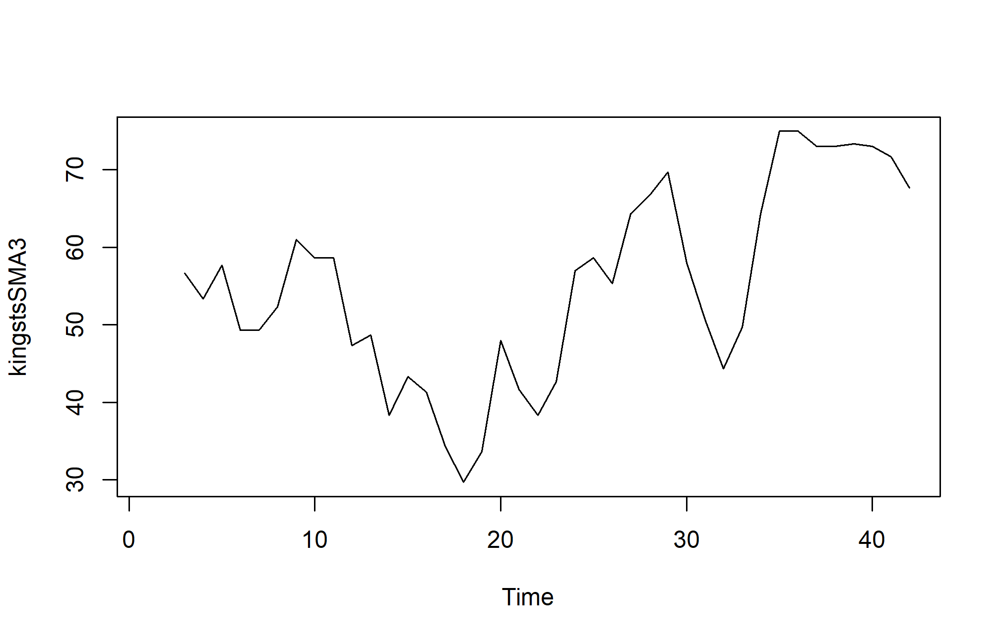
Although smoothing the time series with a simple moving average of order 3 has helped reduce some fluctuations, there are still considerable random variations present. To achieve a more accurate estimation of the trend component, it may be beneficial to apply a higher-order moving average.
Finding the optimal level of smoothing often requires some trial and error to determine the best order that balances noise reduction while preserving the essential patterns in the data.
For instance, you can experiment with a simple moving average of order 8 to see if this provides a clearer representation of the trend. Here’s how you can do that in R:
kingstsSMA8 <- SMA(kingsts,n=8)
plot.ts(kingstsSMA8)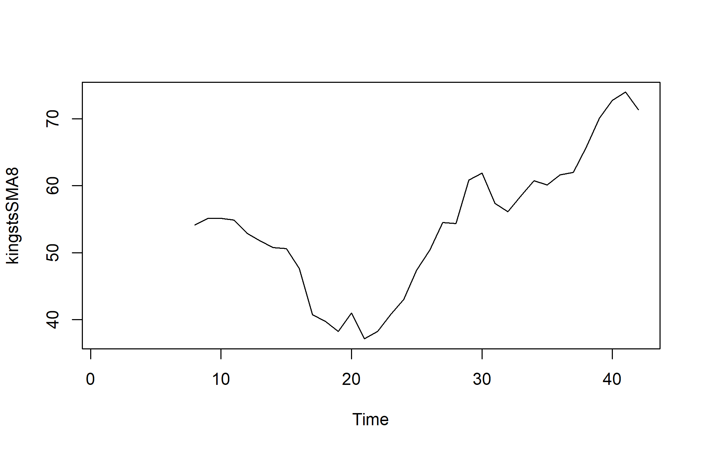
Using a higher order like 8 should help smooth the data further, potentially reducing the random fluctuations and allowing for a clearer view of the underlying trend. This iterative approach can lead to a more accurate understanding of the time series behavior.
A seasonal time series is characterized by three components: a trend component, a seasonal component, and an irregular component. Decomposing this time series involves separating it into these three distinct elements to better understand its structure.
To estimate the trend and seasonal components of a seasonal time series that can be modeled using an additive approach, you can utilize the decompose() function in R. This function effectively breaks down the time series into its constituent components, providing estimates for each.
Here’s how to use the decompose() function:
decompose() Function: You can call this function on your seasonal time series object. For example:birthstscomp <- decompose(birthsts)Accessing Components: The decompose() function returns a list object containing the estimates of the seasonal, trend, and irregular components. You can access these components using the following names:
birthstscomp$seasonal: This element holds the estimated seasonal component.birthstscomp$trend: This contains the estimated trend component.birthstscomp$random: This represents the irregular component.By decomposing the time series, you can analyze each component separately, which can enhance your understanding of the data and improve forecasting accuracy.
Inspect the twelve seasonal factors returned by the decomposition. Their scale is thousands of births. Positive factors identify months above the estimated trend and negative factors identify months below it; compare tapply(birthstscomp$seasonal, cycle(birthsts), mean) rather than relying on a remembered month or value.
To visualize these components—trend, seasonal, and irregular—you can use the plot() function in R. Here is how to do it:
plot(birthstscomp)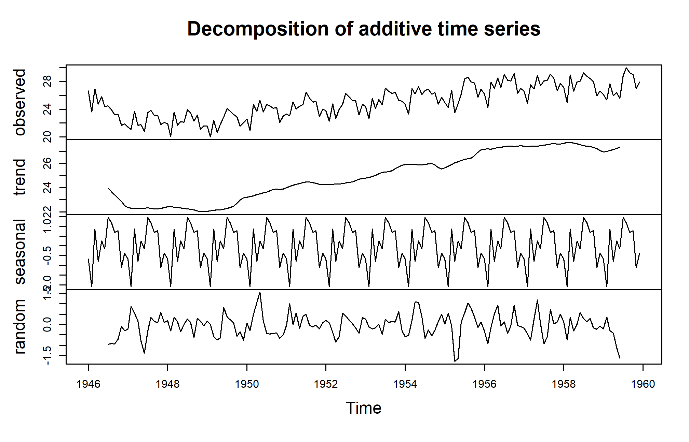
This command will generate a series of plots showing the estimated trend, seasonal, and irregular components of your time series, allowing you to analyze and interpret the behavior of each component visually.
The plot presented above displays the original time series at the top, followed by the estimated trend component, the estimated seasonal component, and finally, the estimated irregular component at the bottom. The trend component reveals a slight decline from approximately 24 in 1947 to around 22 in 1948. After this dip, there is a consistent upward trend, reaching about 27 by 1959.
Seasonal adjustment of a time series involves removing the seasonal effects to reveal the underlying trends and irregularities more clearly. If the time series can be described using an additive model, this process is relatively straightforward. By estimating the seasonal component and subtracting it from the original data, you can remove the seasonal variation and obtain a seasonally adjusted time series.
Here’s how to achieve this in R using the decompose() function:
decompose() function. This function calculates the seasonal, trend, and irregular components of the data.birthstscomp<- decompose(birthsts)birthstsadj<- birthsts - birthstscomp$seasonalBy seasonally adjusting the data, analysts can make more accurate comparisons and forecasts without seasonal noise. This process is crucial in understanding the true underlying behavior of time series data, especially when making decisions based on long-term trends.
We can then plot the seasonally adjusted time series using the plot() function
plot(birthstsadj)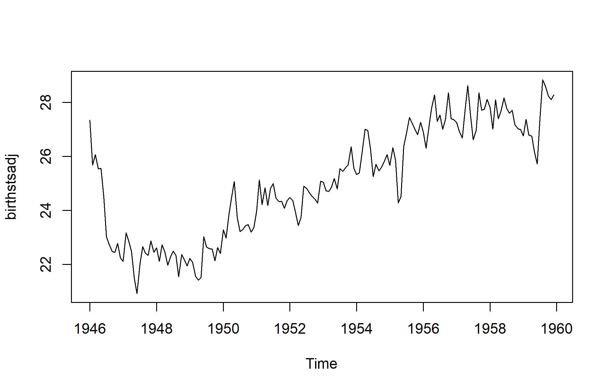
Exponential smoothing, first introduced by Robert Goodell Brown in 1956 and later refined by Charles C. Holt in 1957, is a widely effective technique for smoothing time-series data. Unlike methods like the simple moving average, which apply equal weights to past data points, exponential smoothing uses an exponentially decreasing weight function. This approach assigns more significance to recent observations and less to older ones. A key parameter in this method is the smoothing constant, which determines the rate of decay for the weights. Due to its straightforward nature and ease of application, exponential smoothing is frequently employed in time-series analysis, often incorporating factors like seasonality based on user-defined assumptions.
Exponential smoothing is generally used to make short term forecasts, but longer-term forecasts using this technique can be quite unreliable.
When the smoothing factor (α) is larger, the level of smoothing decreases. An α value close to 1 results in less smoothing, giving more weight to recent changes in the data. Conversely, an α value closer to 0 leads to greater smoothing, making the model less responsive to recent fluctuations.
There is no single alpha value suitable for every series; estimation and forecast evaluation are needed. In some cases, the statistician’s expertise is used to choose an appropriate factor. Alternatively, statistical methods can be applied to optimize α, such as using the least squares method to find the value that minimizes the sum of errors in the model.
Formula: [ F_{t+1} = Y_t + (1 - ) F_t ] where (F_{t+1}) is the forecast for the next period, (Y_t) is the actual observation at time (t), and (F_t) is the forecast for time (t).
Formulas: - Level: [ l_t = Y_t + (1 - )(l_{t-1} + b_{t-1}) ] - Trend: [ b_t = (l_t - l_{t-1}) + (1 - )b_{t-1} ] - Forecast: [ F_{t+m} = l_t + mb_t ]
Formulas: - Level: [ l_t = (Y_t / s_{t-s}) + (1 - )(l_{t-1} + b_{t-1}) ] - Trend: [ b_t = (l_t - l_{t-1}) + (1 - )b_{t-1} ] - Seasonal: [ s_t = (Y_t / l_t) + (1 - )s_{t-s} ] - Forecast: [ F_{t+m} = (l_t + mb_t)s_{t-s+1+((m-1)s)} ]
Exponential smoothing is a powerful technique for forecasting time series data. By applying weighted averages to past observations, it effectively captures trends and seasonal patterns, making it a valuable tool for analysts and decision-makers. The method’s adaptability and ease of use make it an essential part of any forecasting toolkit.
Consider the data rain.csv
rainseries <- ts(rain,start=c(1813))
plot.ts(rainseries)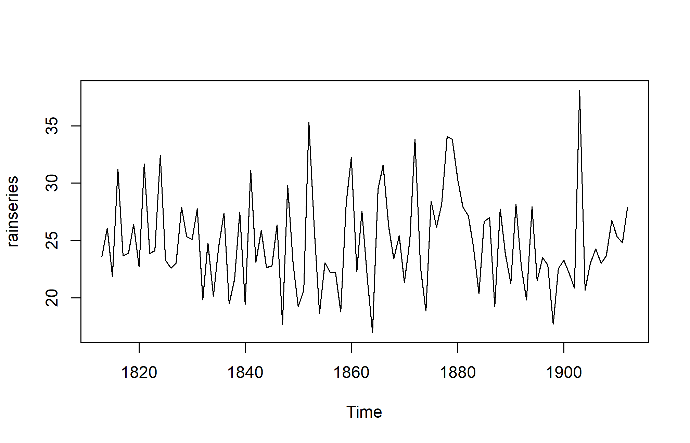
In the above plot we can observe that the mean remains approximately constant at around 25 inches, and the random fluctuations appear to be relatively stable over time. Given this, it seems appropriate to apply an additive model for the time series. Consequently, we can generate forecasts using simple exponential smoothing.
In R, we can fit a simple exponential smoothing model using the HoltWinters() function. For simple exponential smoothing, we must set the parameters beta = FALSE and gamma = FALSE, as these parameters are utilized for Holt’s or Holt-Winters exponential smoothing.
The HoltWinters() function returns a list containing several key components. To forecast a time series, such as London’s annual rainfall, with simple exponential smoothing, we would use the following R code:
rainforecast <-HoltWinters(rainseries, beta = FALSE, gamma = FALSE)
rainforecastHolt-Winters exponential smoothing without trend and without seasonal component.
Call:
HoltWinters(x = rainseries, beta = FALSE, gamma = FALSE)
Smoothing parameters:
alpha: 0.02412151
beta : FALSE
gamma: FALSE
Coefficients:
[,1]
a 24.67819The HoltWinters() function estimates an alpha value of approximately 0.024, indicating that the forecasts consider both recent and past observations, giving a small weight to the latest observation and substantial weight to the previous level estimate. Its fitted component contains in-sample fitted values; it is not a vector of future forecasts. The forecast results are saved in a list variable like rainforecast, and the predicted values can be accessed through its fitted element.
rainforecast$fittedTime Series:
Start = 1814
End = 1912
Frequency = 1
xhat level
1814 23.56000 23.56000
1815 23.62054 23.62054
1816 23.57808 23.57808
1817 23.76290 23.76290
1818 23.76017 23.76017
1819 23.76306 23.76306
1820 23.82691 23.82691
1821 23.79900 23.79900
1822 23.98935 23.98935
1823 23.98623 23.98623
1824 23.98921 23.98921
1825 24.19282 24.19282
1826 24.17032 24.17032
1827 24.13171 24.13171
1828 24.10442 24.10442
1829 24.19549 24.19549
1830 24.22261 24.22261
1831 24.24329 24.24329
1832 24.32812 24.32812
1833 24.21938 24.21938
1834 24.23290 24.23290
1835 24.13369 24.13369
1836 24.13867 24.13867
1837 24.21782 24.21782
1838 24.10257 24.10257
1839 24.04293 24.04293
1840 24.12608 24.12608
1841 24.01280 24.01280
1842 24.18448 24.18448
1843 24.15808 24.15808
1844 24.19889 24.19889
1845 24.16153 24.16153
1846 24.12748 24.12748
1847 24.18133 24.18133
1848 24.02499 24.02499
1849 24.16454 24.16454
1850 24.13476 24.13476
1851 24.01621 24.01621
1852 23.93453 23.93453
1853 24.20964 24.20964
1854 24.25018 24.25018
1855 24.11509 24.11509
1856 24.08964 24.08964
1857 24.04430 24.04430
1858 23.99933 23.99933
1859 23.87319 23.87319
1860 23.97780 23.97780
1861 24.17710 24.17710
1862 24.13110 24.13110
1863 24.21405 24.21405
1864 24.15075 24.15075
1865 23.97658 23.97658
1866 24.10933 24.10933
1867 24.29001 24.29001
1868 24.33729 24.33729
1869 24.31468 24.31468
1870 24.34134 24.34134
1871 24.26847 24.26847
1872 24.28659 24.28659
1873 24.51752 24.51752
1874 24.47295 24.47295
1875 24.33660 24.33660
1876 24.43558 24.43558
1877 24.47717 24.47717
1878 24.56625 24.56625
1879 24.79573 24.79573
1880 25.01341 25.01341
1881 25.14045 25.14045
1882 25.20750 25.20750
1883 25.25411 25.25411
1884 25.23351 25.23351
1885 25.11571 25.11571
1886 25.15248 25.15248
1887 25.19729 25.19729
1888 25.05286 25.05286
1889 25.11768 25.11768
1890 25.08710 25.08710
1891 24.99407 24.99407
1892 25.07019 25.07019
1893 25.01085 25.01085
1894 24.88515 24.88515
1895 24.95884 24.95884
1896 24.87469 24.87469
1897 24.84201 24.84201
1898 24.79420 24.79420
1899 24.62284 24.62284
1900 24.57259 24.57259
1901 24.54141 24.54141
1902 24.48421 24.48421
1903 24.39631 24.39631
1904 24.72686 24.72686
1905 24.62852 24.62852
1906 24.58852 24.58852
1907 24.58059 24.58059
1908 24.54271 24.54271
1909 24.52166 24.52166
1910 24.57541 24.57541
1911 24.59433 24.59433
1912 24.59905 24.59905We can plot the original time series against the forecasts
plot(rainforecast)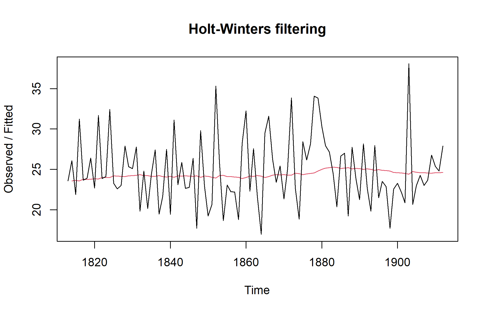
The plot displays the original time series in black, with the forecasts represented by a red line. The forecasted time series appears much smoother compared to the original data. To assess the accuracy of these forecasts, we can calculate the sum of squared errors (SSE) for the in-sample forecast errors, which refer to the forecast errors over the period covered by the original time series. This SSE value is stored in the SSE element of the rainforecast list.
rainforecast$SSE[1] 1828.855In this case, the sum of squared errors (SSE) is 1828.855. In simple exponential smoothing, the initial value for the level is often set to the first value of the time series. For instance, in London’s rainfall data, the initial value is 23.56 inches for the year 1813. To specify this initial level value in the HoltWinters() function, you can use the l.start parameter. For example, to set the initial level to 23.56, you would use the following command:
HoltWinters(rainseries, beta = FALSE, gamma = FALSE, l.start = 23.56)Holt-Winters exponential smoothing without trend and without seasonal component.
Call:
HoltWinters(x = rainseries, beta = FALSE, gamma = FALSE, l.start = 23.56)
Smoothing parameters:
alpha: 0.02412151
beta : FALSE
gamma: FALSE
Coefficients:
[,1]
a 24.67819Monthly rainfall, weekly pest counts, and annual crop yields are time series when observations have a meaningful chronological order. Nearby observations may be correlated. A random train/test split can leak future information into an analysis and exaggerate forecast accuracy.
A trend is a sustained change in level. Seasonality is a recurring pattern at a known period, such as 12 months. Irregular variation remains after systematic components are described. An additive representation is \(Y_t=T_t+S_t+E_t\). A multiplicative representation is more plausible when fluctuations increase with the series level, and may motivate a logarithmic transformation for strictly positive values.
weather <- read.csv("data/weather.csv")
weather$date <- as.Date(weather$date)
weather <- weather[order(weather$date), ]
expected <- seq(as.Date("2015-01-01"), as.Date("2024-12-01"), by = "month")
stopifnot(!anyDuplicated(weather$date), identical(weather$date, expected),
all(is.finite(weather$rain_mm)))
rain <- ts(weather$rain_mm, start = c(2015, 1), frequency = 12)
plot(rain, ylab = "Monthly rainfall (mm)", xlab = "Year")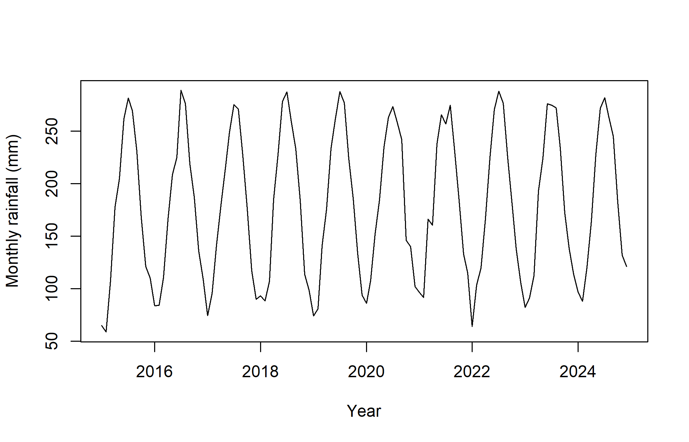
monthplot(rain, ylab = "Monthly rainfall (mm)", xlab = "Month")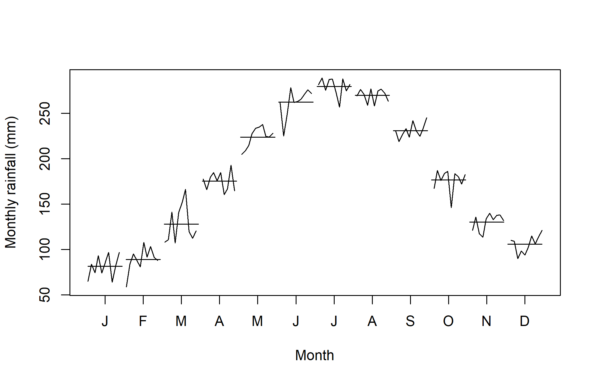
frequency = 12 declares 12 equally spaced observations per seasonal cycle; it does not fill gaps or verify dates. Irregular or missing months must be investigated before constructing the series. The simulation is smooth and complete for teaching; real rainfall often has zeros, skewness, extreme events, and structural changes.
trailing3 <- stats::filter(rain, rep(1 / 3, 3), sides = 1)
plot(rain, col = "grey60", ylab = "Monthly rainfall (mm)")
lines(trailing3, col = "#245A42", lwd = 2)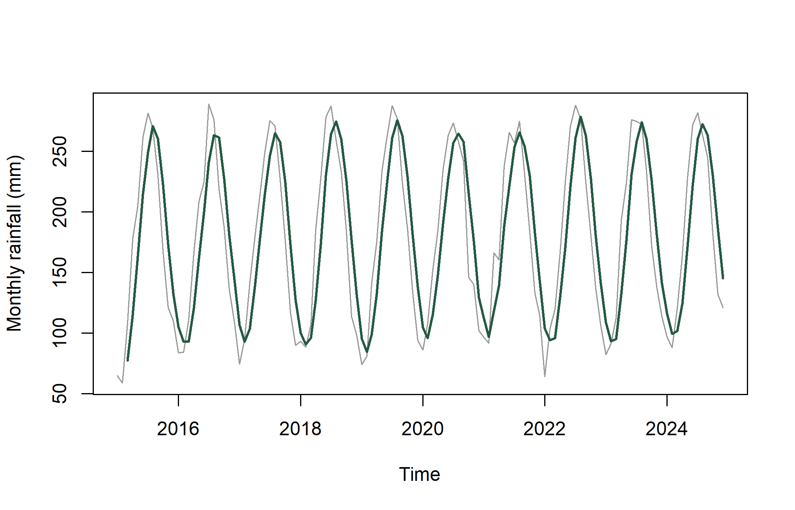
decomposition <- stl(rain, s.window = "periodic")
plot(decomposition)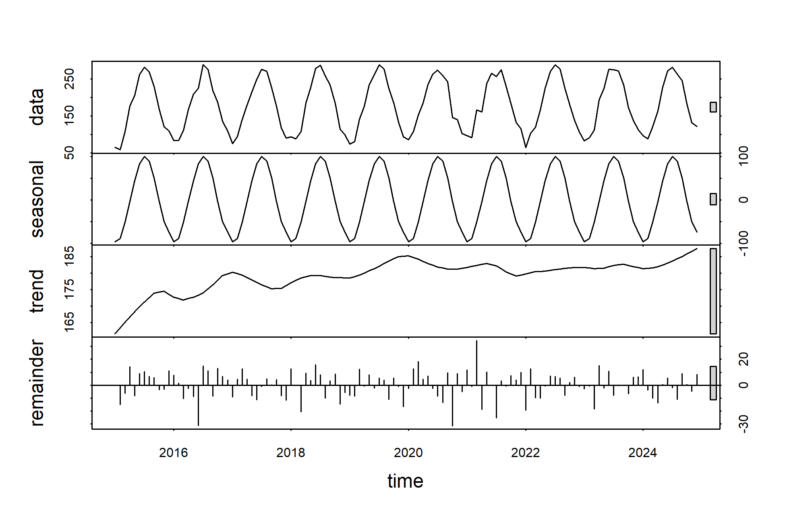
A trailing three-month average uses the current and previous two months. A centred average also uses future observations relative to its centre, so it is suitable for retrospective description but not directly available at a forecast origin. Larger windows smooth more but can hide rapid changes. stl() here assumes a fixed seasonal pattern through s.window = "periodic"; inspect whether that is reasonable.
ARIMA combines autoregression (dependence on past values), differencing (changes between successive values), and moving-average error terms (dependence on past shocks). The notation ARIMA\((p,d,q)\) gives their orders. Seasonal terms have analogous orders and a seasonal period. The moving-average term in ARIMA is not the same as a simple rolling mean of observations.
Automatic selection searches candidate models under an information criterion. It cannot determine whether a forecast is useful for an agricultural decision. Fit only on the training period and compare predictions with a simple alternative.
library(forecast)Registered S3 method overwritten by 'quantmod':
method from
as.zoo.data.frame zoo train <- window(rain, end = c(2022, 12))
test <- window(rain, start = c(2023, 1))
fit <- auto.arima(train, seasonal = TRUE, stepwise = FALSE, approximation = FALSE)
fitSeries: train
ARIMA(0,0,0)(0,1,1)[12] with drift
Coefficients:
sma1 drift
-0.7740 0.1300
s.e. 0.1496 0.0519
sigma^2 = 180.9: log likelihood = -341.87
AIC=689.74 AICc=690.04 BIC=697.04fc <- forecast(fit, h = length(test), level = c(80, 95))
baseline <- snaive(train, h = length(test))
accuracy(fc, test) ME RMSE MAE MPE MAPE MASE
Training set 0.3964322 12.43024 8.960996 0.108762 6.256319 0.6567123
Test set -3.8000314 10.79652 8.679646 -2.820437 5.974210 0.6360934
ACF1 Theil's U
Training set -0.05648004 NA
Test set -0.15342540 0.3985872accuracy(baseline, test) ME RMSE MAE MPE MAPE MASE ACF1
Training set 1.269048 16.96493 13.64524 0.2155139 9.597248 1.0000000 -0.1568845
Test set 2.183333 12.72442 9.62500 1.8576440 7.019550 0.7053743 -0.2741826
Theil's U
Training set NA
Test set 0.3913482plot(fc, xlab = "Year", ylab = "Monthly rainfall (mm)")
lines(test, col = "#B45C21", lwd = 2)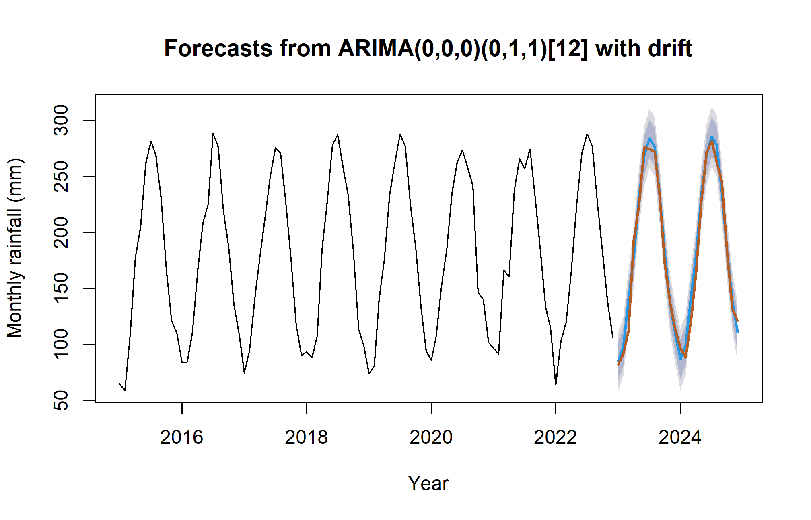
The seasonal naive baseline predicts each month using the value from the corresponding month of the previous year. Compare holdout RMSE and MAE, not only in-sample errors. MAPE is problematic near zero, common in rainfall. A model that loses to a baseline has not earned its complexity. For stronger evaluation, use rolling forecast origins and report accuracy by forecast horizon.
checkresiduals(fit)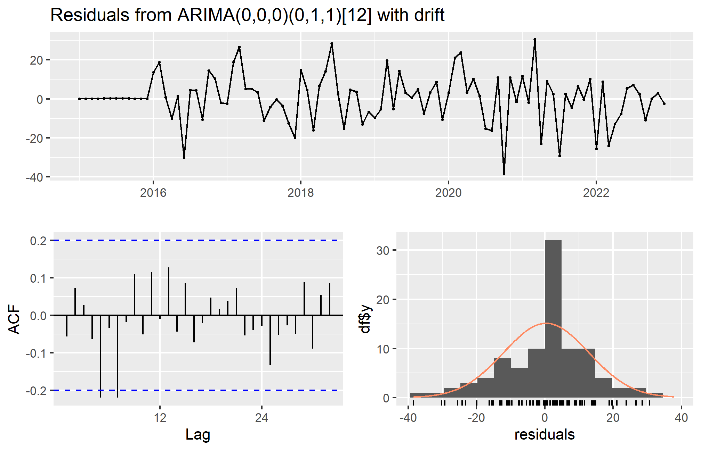
Ljung-Box test
data: Residuals from ARIMA(0,0,0)(0,1,1)[12] with drift
Q* = 18.591, df = 18, p-value = 0.4174
Model df: 1. Total lags used: 19The residual time plot reveals changing spread or isolated shocks; the autocorrelation function identifies remaining temporal patterns; and a Ljung–Box test checks a set of residual autocorrelations. A large p-value does not prove independence. A good forecast should also be plausible: an unconstrained Gaussian model may generate negative rainfall predictions. Consider suitable transformations or nonnegative models rather than silently replacing negative forecasts with zero.
Prediction intervals describe uncertain future observations under the model. They do not guarantee that all future values lie inside them. Changes in climate, instrumentation, or management can invalidate historical relationships.
After choosing a method using training and validation, refit it on all available historical data for an operational forecast. Keep the evaluation results separate from this final fit.
final_fit <- auto.arima(rain, seasonal = TRUE)
forecast(final_fit, h = 12) Point Forecast Lo 80 Hi 80 Lo 95 Hi 95
Jan 2025 83.79209 66.60928 100.9749 57.51325 110.0709
Feb 2025 96.68172 79.49891 113.8645 70.40288 122.9605
Mar 2025 120.81835 103.63555 138.0012 94.53952 147.0972
Apr 2025 173.60382 156.42101 190.7866 147.32499 199.8827
May 2025 227.96329 210.78048 245.1461 201.68445 254.2421
Jun 2025 274.42313 257.24033 291.6059 248.14430 300.7020
Jul 2025 284.75936 267.57656 301.9422 258.48053 311.0382
Aug 2025 272.31420 255.13140 289.4970 246.03537 298.5930
Sep 2025 237.17635 219.99354 254.3592 210.89752 263.4552
Oct 2025 181.70554 164.52274 198.8883 155.42671 207.9844
Nov 2025 137.58014 120.39733 154.7629 111.30131 163.8590
Dec 2025 116.28728 99.10447 133.4701 90.00844 142.5661Chapter review. Preserve chronology, verify regular spacing, compare a baseline, inspect residual dependence, and communicate prediction uncertainty.
Smooth a seasonal series and forecast
Edit the code, then select Run R. The first run downloads R into your browser and may take a little time. Copy code also lets you use this example in RStudio.
set.seed(531)
month <- 1:60
rain <- ts(100 + 0.3 * month + 30 * sin(2 * pi * month / 12) +
rnorm(60, 0, 8), start = c(2020, 1), frequency = 12)
smooth <- stats::filter(rain, rep(1/12, 12), sides = 2)
plot(rain, col = "#386ca2", ylab = "Simulated rain (mm)")
lines(smooth, col = "#b87521", lwd = 3)
fit <- arima(rain, order = c(1, 0, 0),
seasonal = list(order = c(1, 0, 0), period = 12))
predict(fit, n.ahead = 3)Investigate. The forecast prints predictions and standard errors. This is a model demonstration on simulated rainfall, not an operational weather forecast. Explain why smoothing produces missing values at the ends.
Record the input you changed, the output you obtained, and your interpretation. These live examples use base R and work independently. The full chapter examples, including package-based analyses, remain available with copy buttons for RStudio. Browser objects last until this page is reloaded; Reset code restores the editor text. Internet access is needed on first use; long or interactive desktop tasks belong in RStudio.